Fifty Robots Find Each Other in the Dark
Underwater, nearly every sensor a robot depends on stops helping. GPS is gone, the camera can't see much, and radio doesn't travel. You're left with short-range sensing and dead reckoning, and the question our team wanted to answer was whether a fleet can still stick together on just that. We built our answer in three layers. First a 6-DoF AUV dynamics model with realistic thrusters and hydrodynamics, then a tracking and obstacle avoidance controller that only uses LiDAR to find its way through a maze, and finally a 50-agent flocking simulation where robots scattered at random pull together into one group using nothing more than the range and bearing to whoever happens to be in sight.
One lighthouse, and everyone else following its light.
We built the problem around a "lighthouse". One vehicle in the fleet runs the full AUV dynamics, moves through the environment as the ground truth, and publishes its 2D position to the tracking model. None of the other robots know where they are in any global sense. All they know is what their LiDAR sees right now. If the lighthouse is inside a robot's sensing cone and range, that robot follows it. If not, it goes looking.
Treating one robot differently was a shortcut we chose on purpose. Simulating full hydrodynamics for every agent is expensive, and the environmental forces that matter most are the ones on the vehicle everybody else is following. So the lighthouse feels the environment and the followers don't. Our report is upfront that this is a limitation, not a design feature.
The robots live in a closed maze, and the walls are the obstacles. Open water would be more realistic, but the walls let us watch obstacle avoidance, tracking and flocking all happen in the same scene.
We modeled the motors, drag and buoyancy instead of assuming them.
The AUV weighs 10 kg and has five thrusters: two T200s to push forward, two T100s to move sideways and one T200 to go up and down. We didn't want to pretend thrust just appears when you ask for it, so we modeled the motors from first principles, using the electrical equation with back-EMF and the mechanical torque balance, and derived their transfer functions in MATLAB. That way a commanded voltage turns into a real angular velocity with the right dynamics in between.
mechanical: Tm(s) = Jsω(s) + Bω(s) + TL(s), Tm = KtIa(s)
rigid body: τ = M(q)q̈ + C(q,q̇)q̇ + D(q,q̇) + G(q) inertia, Coriolis, hydrodynamics, buoyancy
A PID translation controller follows waypoints from a reference generator. Its output goes through a dead zone from −0.5 to +0.5 before becoming PWM, so tiny errors don't make the thrusters chatter. Drag and lift come from the velocity broken into body axes, get added to the thruster forces, and feed a 6-DoF body-to-Euler block that gives back position, orientation, rates and accelerations. From that we pull out angle of attack, side slip and IMU data, which are the signals a real vehicle would actually have to navigate with.
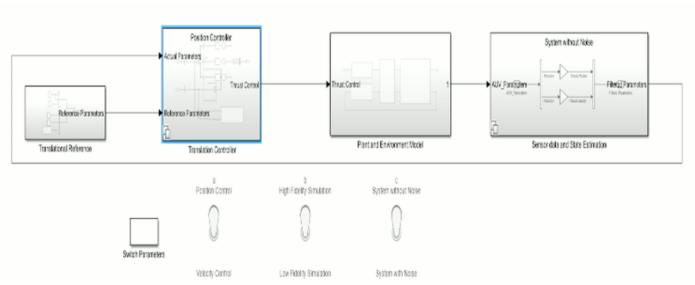
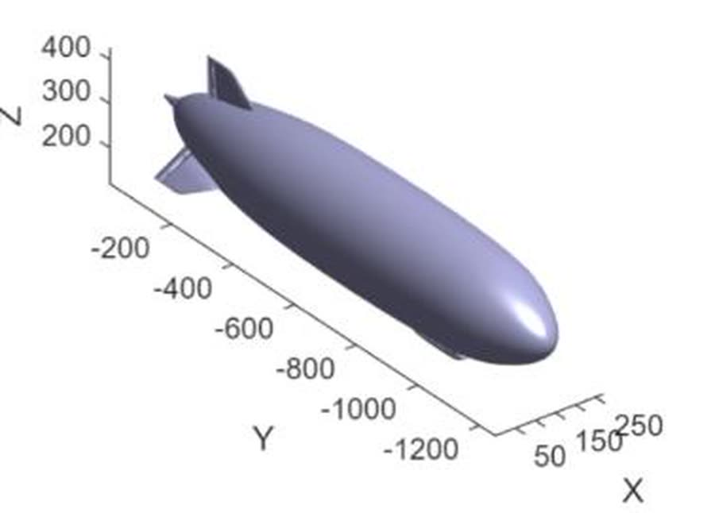
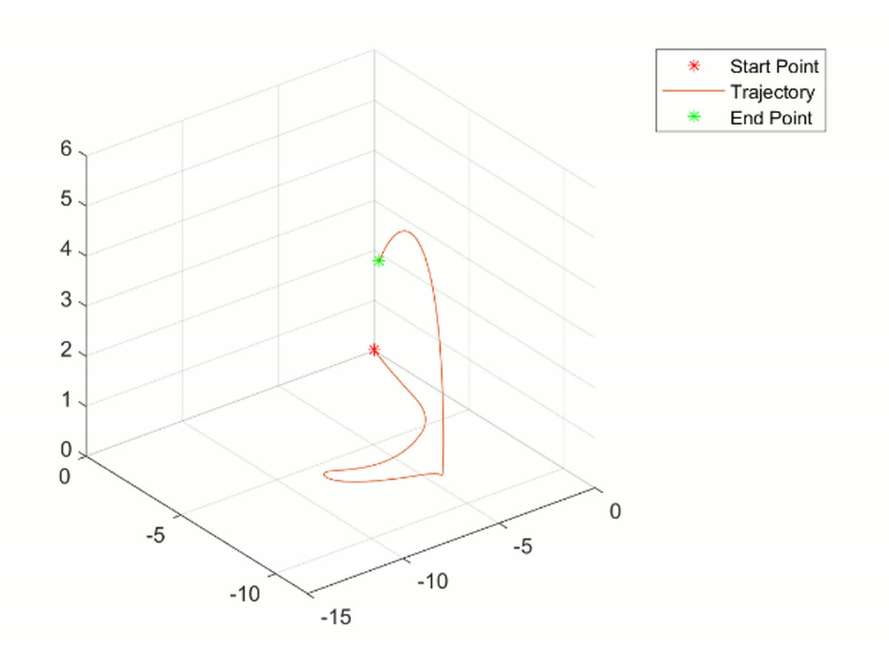
How far, which direction, and whether it's in view. That's all.
We kept the sensor model bare on purpose, since the whole point was to see how little a robot can get by with. The sensor sits a little way off the robot's center, so its position in the world includes that offset rotated into the body frame. For each object it works out the straight-line range and a bearing wrapped to [−π, π], throws away anything outside the 90° field of view or past maximum range, sorts the rest by distance, and only reports the closest few.
ri = ‖pi − psensor‖, φi = wrapToPi( atan2(Δy, Δx) − θsensor )
keep if |φi| ≤ FoV/2 and ri ≤ rmax, then sort by r and cap at maxDetections
That last step, capping how many detections come back, is what lets this scale. A robot never has to think about 49 neighbors, just the few nearest to it. That's what a real sensor would give you anyway, and it keeps the controller's cost the same no matter how big the fleet gets.
If you can't see it, turn until you can.
Each follower runs a small state machine that depends only on what its LiDAR returns. The bearings it sees are checked against the sensor's angle window and range limit. When the average detection angle goes negative, meaning the lighthouse isn't in front, the robot spins in place to find it again instead of wandering off. Once the target is in view it drives toward it at a constant speed, and the tracking law keeps a set distance from the lighthouse and from the other followers. Without that distance, following quickly turns into a pile-up.
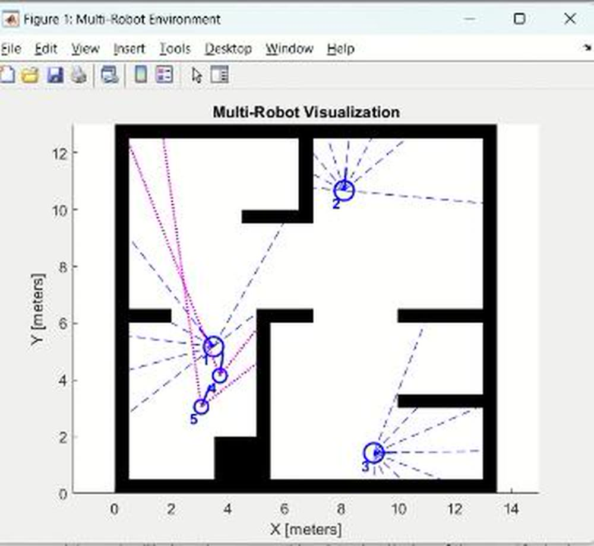
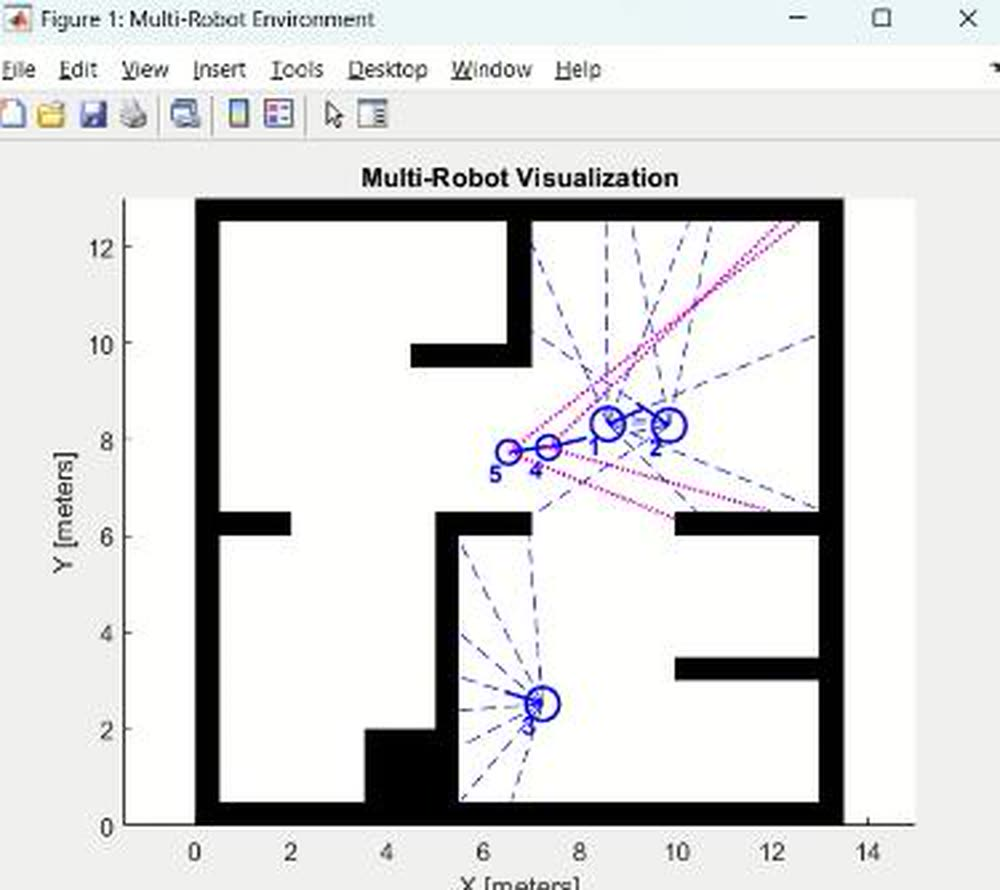
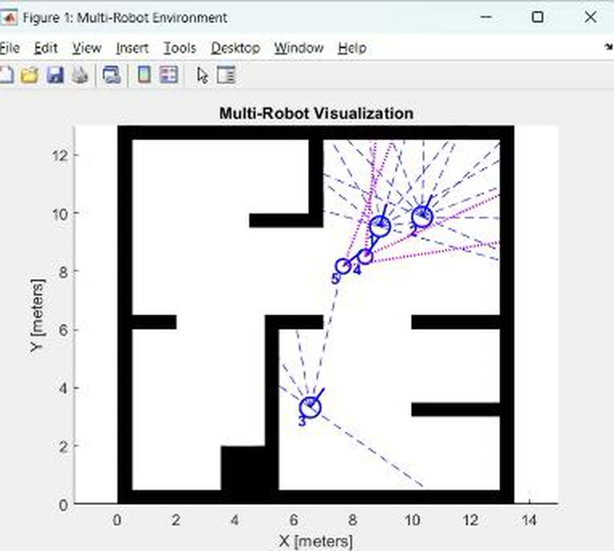
Fifty robots with no leader and no map end up as one group.
The grouping model takes the same building blocks up to 50 point-mass robots, each with LiDAR, an IMU and a 90° field of view, using the same parameters as the tracking model so the layers stay consistent. Every robot has an ID and a team, and it moves based on the average position and heading of the teammates it can see at that moment. It's a simple averaging rule, not a global optimization, and nothing is broadcast and no map is shared.
θ̄ = (1/N) Σ θi, r̄ = (1/N) Σ ri averaged over the teammates in view
x(t+Δt) = x(t) + v·Δt·cos θ, y(t+Δt) = y(t) + v·Δt·sin θ, θ(t+Δt) = θ(t) + ω·Δt
Attraction and repulsion pull in opposite directions. One draws the group together and the other stops members from bumping into each other, and the balance point between them is the formation. No robot ever works out the formation. It's simply what you get when the two forces cancel.
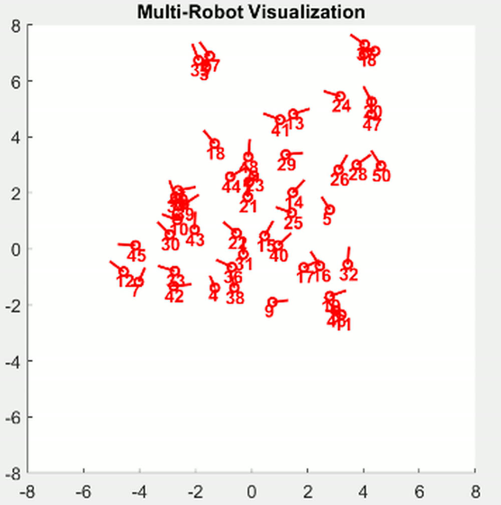
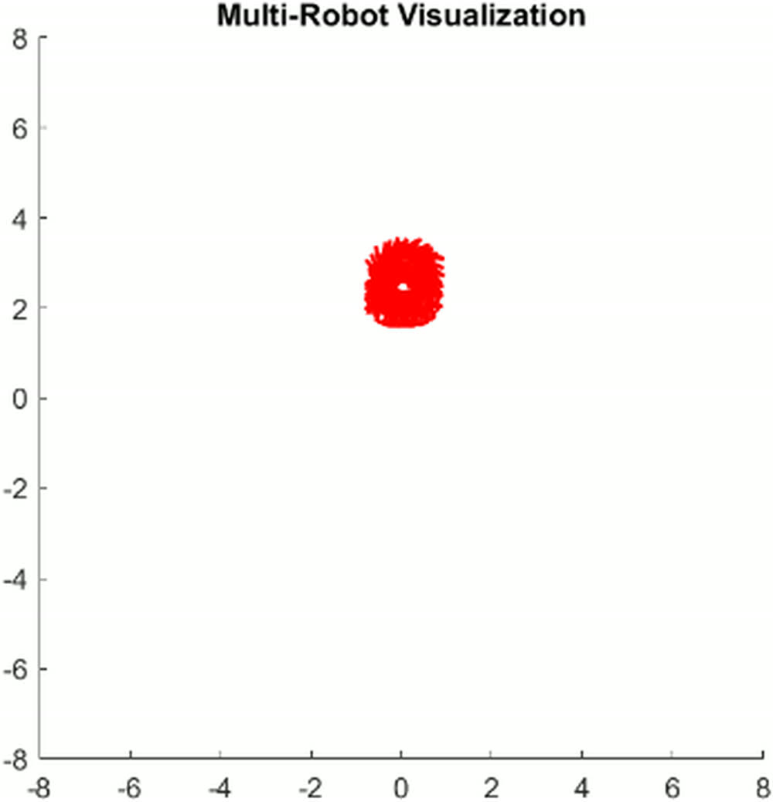
The same controller can form several groups at once just by changing who is on which team. Three teams that start all mixed together sort themselves into three separate clusters, and the control law doesn't change at all. That's exactly what a real survey fleet would need, with smaller teams covering different areas and meeting up later.
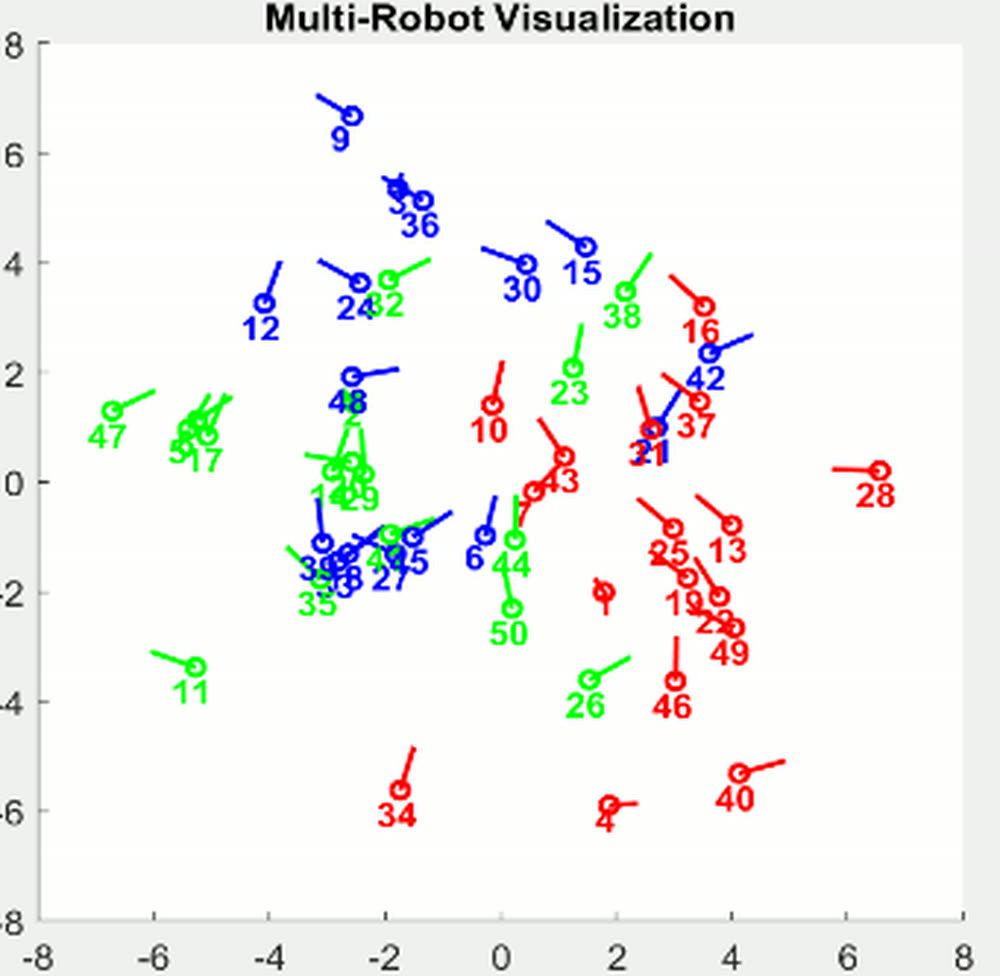
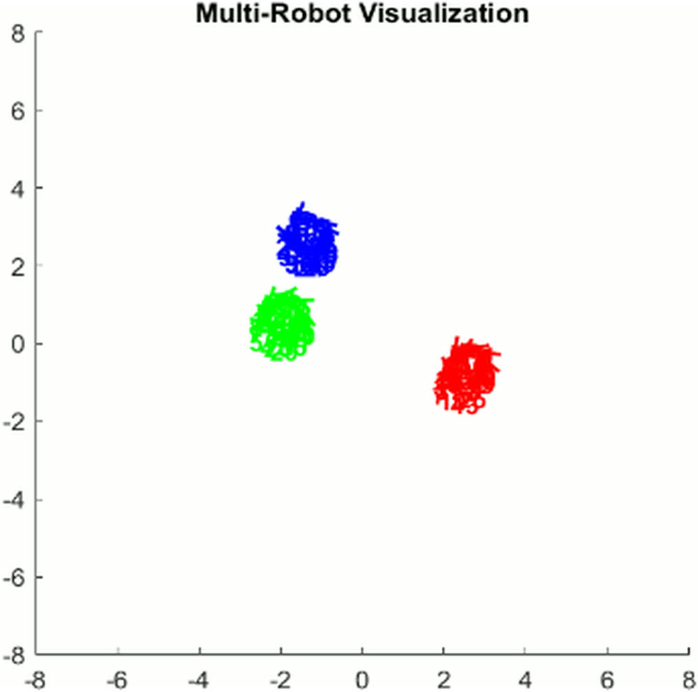
The trajectory plots are where convergence goes from something you can see to something you can measure. In the x and y view every path spirals in toward the same area. Plotted against time, the fifty traces fan out early, then squeeze into a steady band and stay there, which is exactly what our analysis predicted.
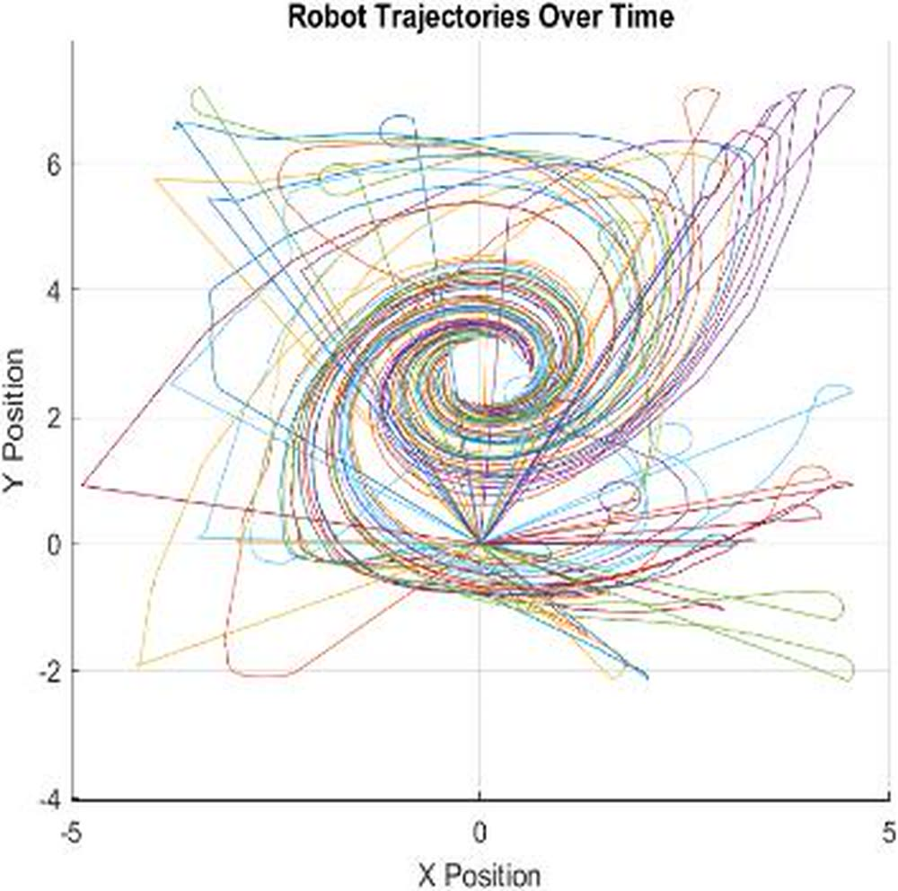
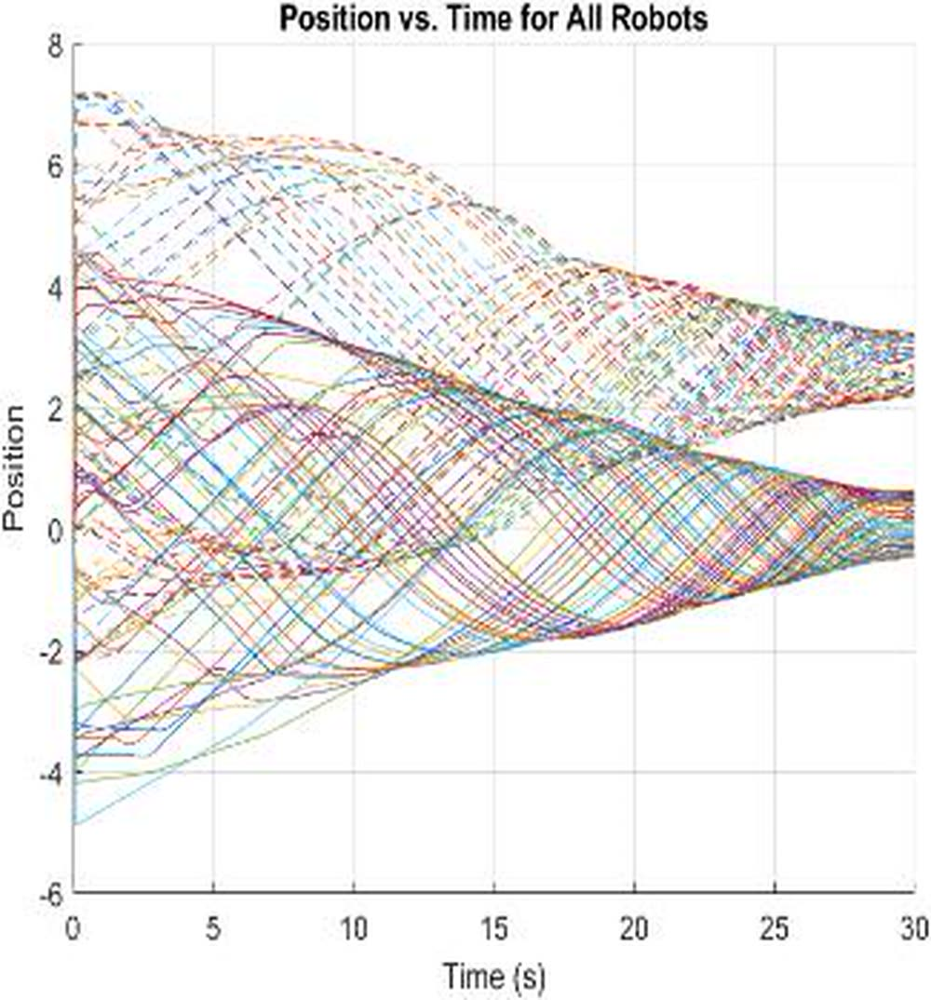
Watch the models run.
A recorded tour through all three simulation layers: the AUV Simulink model with its thruster dynamics, the tracking and avoidance behavior, and the grouping model coming together.
Air makes a cheap ocean.
Testing AUV hardware takes water, weeks and money. Our workaround was to build the vehicle as a blimp and swap the density of water for the density of air. Both are slow, heavy on drag and ruled by buoyancy, close enough that the same dynamics model carries over with a change of fluid properties. And you can fly a blimp down a corridor.
Our build flew and held a steady level on its own with three motors instead of five, but we didn't finish the full vehicle within the course. The report says so plainly: the hardware is still open, and so are the environmental effects we never modeled on the followers. The blimp as a test platform carried on the next semester on a far more capable airframe, which became AeroFusion (Spring 2025).
A team project by Prajjwal Dutta, Vivek Sunil Kulkarni and Niyati Abhijeet Vaidya at Arizona State University. According to the report, Prajjwal and Niyati led the theoretical analysis and mathematical modeling, and Niyati and Vivek built and validated the Simulink model. All figures come from our team report, linked above.
What I took away from it.
A group can behave well without anyone having the big picture. Fifty agents came together with no map, no GPS and no broadcast, just range and bearing to whoever was inside a 90° cone. The group forms on its own, and that's exactly why it keeps working when communication drops. Capping detections is what lets it grow. Each robot's workload depends on how many neighbors it can see, not how many exist, so 50 agents run the same controller as 4. And a model has to be accurate where it counts. Deriving the motor transfer functions and the hydrodynamic forces, instead of assuming perfect thrust, is the difference between a flocking demo and a simulation of a real vehicle. Being upfront in the report about what we skipped, the environmental forces on the followers, comes from the same habit.